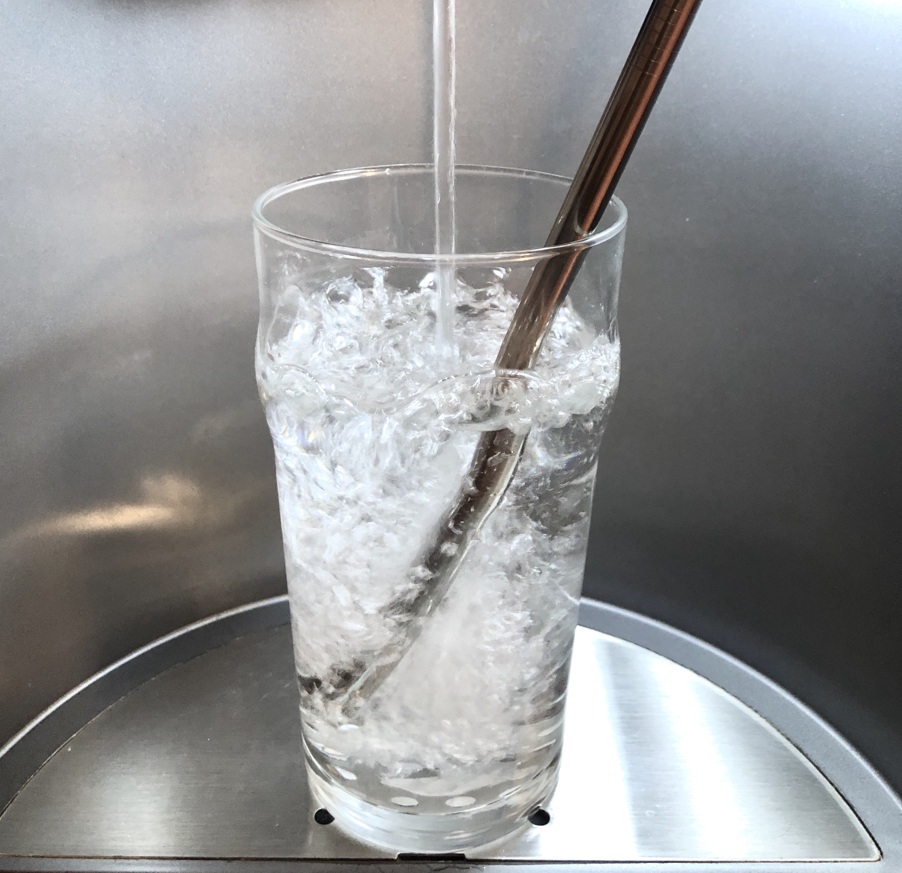

The Mission Continues
About 1.6 straws per person get used every day. That's over 11 billion straws! Regular plastic straws are not recyclable and do not decompose. This leads to long-term pollution. And, becuase they are light weight, they often blow away and end up in water where they pose a threat to marine life.
Our mission to help reduce waste has led us to make the next high-quality reusable product you need to live your eco-friendly life. Our new Arctic Circle Staws are made of food-grade stainless steel and come with a free brush for cleaning the inside of the straw. All of our straws fit in our Arctic Circle Reusable Waterbottles.